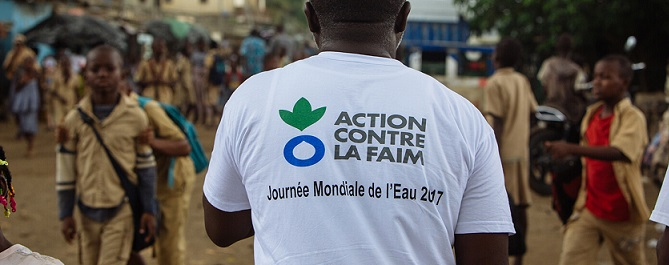
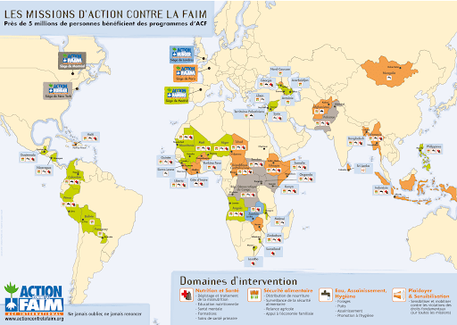

Qu'est-ce qu'Action contre la faim ?
Une action humanitaire française
Action contre la faim est une association loi 1901 crée en 1979. Il s'agit d'une organisation non gouvernementale visant à lutter contre la faim dans le monde. Leurs moyens d'action sont la prévention, la détection et le traitement de la sous-nutrition notamment lors de situation liées aux conflits et aux catastrophes naturelles.
Portée internationale
Structurée en réseau international, Action contre la faim est présent dans près de 50 pays, principalement en Asie, en Amérique du Sud et en Afrique.
7 domaines d'expertise
Nutrition et santé
820 millions de personnes souffrent de la faim dont 159 millions d'enfants de moins de 5 ans atteints de malnutrition chronique. Action contre la faim lance des programmes, le plus souvent en période de crise, adapté au contexte et à la culture locale. L'association forment également les travailleurs locaux afin d'assurer leur autonomie dans la prise en charge et le traitement de la malnutrition au niveau national.
Sécurité alimentaire et moyen d'existence
Une personne sur trois est touché de malnutrition alors que 2 milliards d'adultes sont en surpoids ou obèses. La lutte contre ce fléau doit faire partie des priorités politiques. Les causes de l'insécurité alimentaire sont multiples (conflits, changement climatique, manque d'accès à l'eau potable, pauvreté). L'ONG promeut une approche intégrale dans ses activités afin d'aborder les causes sous-jacentes et à long terme de la faim et de la malnutrition.
Eau, assainissement et hygiène
L'accès à l'eau potable et sa gestion est un élément central dans la gestion de toutes les crises humanitaires. En 2016, 1,8 milliards de personnes utilisaient de l'eau provenant d'une source contaminée. Plus de 80% des eaux usées générées dans le monde retournent dans l'écosystème sans avoir été traitées, faute d'infrastructures pour le traitement des eaux usées. Action contre la faim mène des programmes d'amélioration de l'accès à une eau saine et met sur pied des réseaux d'assainissement pour assurer l'hygiène des collectivités. L'association fait également de la sensibilisation aux bonnes pratiques d'hygiène et à la gestion de l'eau.
Santé mentale, pratiques de soin, genre et protection
Les populations les plus vulnérables sont souvent les plus sujettes à des choses traumatiques. Les interventions de l'ONG sont variées et s'adaptent au contexte, entre soutien à la parentalité et changements de comportement. Lors des situations d'urgence et d'épidémie, les équipes accompagnent les personnes en détresse pour qu'elles retrouvent des ressources. Des interventions psychosociales et sur la parentalité permettent de lutter durablement contre la faim et de minimiser l'impact des contextes difficiles sur la santé de la population. Pour les enfants, des activités de groupe, des activités parents-enfants pour renforcer les liens familiaux, des parcours psychomoteurs sont mis en place afin qu'ils puissent grandir et se développer le plus sereinement possible.
Plaidoyer
Il s'agit de provoquer des changements durables en terme de politique et de capacités d'intervention, en influençant les décideurs politiques et économiques ainsi qu'en mobilisant l'opinion publique. L'acitivité de plaidoyer s'articule autour de 2 axes :
- la lutte contre la faim et la malnutrition
- la défense des principes humanitaires
Climat
Les populations les plus vulnérables sont en première ligne des événements météorologiques extrêmes. Ces crises climatiques ont renforcées et accélérées les facteurs sous-jacents conduisant à la sous-nutrition. Action contre la faim met en place une approche transversale et multisectorielle pour la mise en application des mesures de préparation de réponse, de prévention aux désastres afin de garantir que les moyens d'existence des populations vulnérables soient plus résilients à des chocs ponctuels et récurrents.
Recherche
Les programmes de recherche sont définis sur la base des besoins du terrain. Ils s'articulent autour de 3 axes :
- Identification des approches préventives efficaces contre la sous-nutrition
- Identification des modalités de msie à l'échelle d'un traitement efficace de lutte contre la sous-nutrition
- Identification des outils de réponse et préparation aux urgences